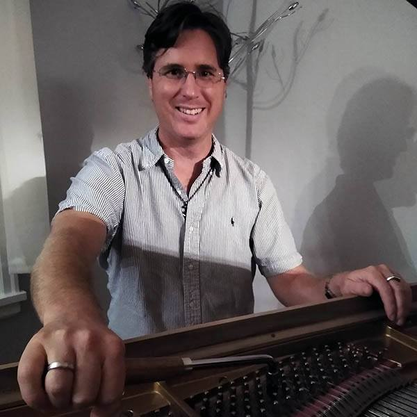

HiLu Piano Tuning and Repair
Providing fully vaccinated piano and harpsichord services to the greater Twin Cities area.
About
I'm Hoyt Drayer, member of the Piano Technician’s Guild. I started tuning and regulating my own piano circa 2017, and am now turning that skill into a career. I have a bachelor’s degree in commercial music from Millikin University, where I majored in 'cello and vocal performance plus studio technology. I made the Twin Cities home in 2013, and thanks to 8 years of driving buses throughout the Metro, I can find my way to any piano from Lake Minnetonka to to the St. Croix river.
Introduction to my mentor
Ron Poire served as head piano technician at the University of Minnesota for 10 years, and has been working on pianos for more than 4 decades. Since he cannot drive, I take him to his appointments, and he is helping me master the art of aural tuning, both for pianos and baroque keyboard instruments.
Book Online Now or
Call or Text 612-324-1881
Rates
Tuning
Basic $150 Full Service $200
Basic tuning is tune and leave. Full service includes pitch raise, cleaning inside of case, and minor repairs. Minnesota's four distinct seasons are hard on pianos, and the best way to keep them in proper tune as the humidity and temperature shift is to have it tuned every 3 months. Discounts provided for frequent clients.
Piano Spa Day
$600
If your piano hasn't had any maintenance other than tuning for many years, it's going to need a combination of hammer reshaping, regulation, and repairs. Instead of listing out specific jobs, I'll do whatever your piano needs in one day of work to make it play and sound better.
Piano Life Saver
$600
All pianos in Minnesota should have piano life savers. Made domestically by Dampp Chaser, a piano life saver uses heating elements and a water tank to compensate for seasonal humidity swings, making tunings and pianos last longer. Remember to water your piano.
Reshaping & Voicing
$100
All pianos get brighter the more they get played. Every keystroke makes the hammer felts harder and pounds grooves in the hammers at the contact point, distorting the tone. Reshaping and voicing restores a softer attack when played gently, while still allowing a brighter attack when played hard. Expand your piano's expressive possibilities by having it voiced.
Heavy Repairs
Quote Provided at appointment
If your piano requires more than a couple days of work, it's best to take either the action or the whole piano to my shop. Examples include full restringing, replacing tuning pins, or rebuilding actions.
Harpsichord Service
$100 per choir
Tuning, regulating and voicing harpsichords and clavichords.
Harpsichord Action Rebuild
$2000 per choir
Replacing obsolete jacks and registers to restore full functionality.
Why HiLu
HiLu was my great grandmother's nickname, whose actual name was Lucille Gilbert. She was a talented pianist in the 20s. Her husband was surprised to find out after the wedding that she had a $900 (in 1919 dollars) debt for a Mason and Hamlin upright piano she had recently bought.
She taught two generations of piano students on that instrument. With the permission of her descendents, including the one who coined her nickname, I have named my business in honor of the best pianist in my family. My goal is to make every piano I tune enjoyable for HiLu to play.